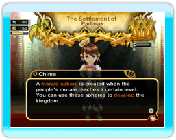

24
|
Morale |
 |
You may have noticed that citizens sparkle when the king takes some time to speak to them.
 This indicates that the citizen is happy. Making citizens happy adds to the morale gauge displayed at the top left of the screen. There are other ways to raise the morale gauge. Citizens finding great sales in bakeries and emporiums, or granting the wishes of your citizens, can also add to the morale gauge. Once the morale gauge is full, you gain extra income displayed as "morale bonus" in the daily financial report. A full morale gauge also creates a morale sphere, an item that can be used by the king to further enhance the realm. The number of morale spheres that can be accumulated increases with the number of bakeries and emporiums in the realm. |
● Using Morale Spheres
・Spreading Morale  Summon Chime when you have a morale sphere ready to be used. If you speak to townspeople on the street during this period, you can raise their families' happiness level. Talking to adventurers during this time will also boost their stats temporarily. Summon Chime when you have a morale sphere ready to be used. If you speak to townspeople on the street during this period, you can raise their families' happiness level. Talking to adventurers during this time will also boost their stats temporarily.・Developing the Kingdom You can use morale spheres while in the castle menu to develop the kingdom. This action results in raising the prosperity of the realm, giving you access to more behests, as well as information regarding your citizens' desires. Fulfilling the latter will result in a further boost in morale. There are also other benefits to developing the kingdom--keep an eye out for them! |
● Morale Frenzy
The kingdom goes into a state of morale frenzy when adventurers complete goals in dungeons. Any of the king's actions that can boost citizens' morale gain bonuses. Use this state to boost morale even further. |
 |
 |
 |